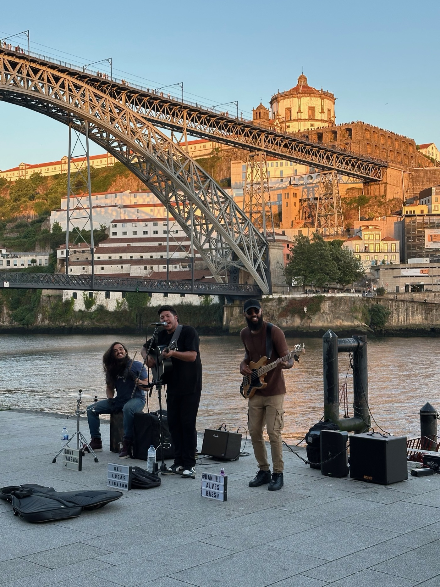

Project / Contribution
브리크 ‘이베리아반도 유랑기’ 기고
Contribution to Brique Magazine — Iberian Peninsula Wanderings

라이프스타일 미디어 플랫폼 브리크에 64일간의 이베리아반도와 남부 프랑스 유랑을 바탕으로, 도시와 건축, 자연, 음식, 축제의 관계를 탐구한 시리즈를 기고한 프로젝트다.
This editorial contribution to Brique traced architecture, nature, food, and festivals across a 64-day journey through the Iberian Peninsula and southern France.
프로젝트 개요
라이프스타일 미디어 플랫폼 브리크에 '이베리아반도 유랑기' 시리즈를 기고했다. 이 시리즈는 2024년 6월 18일부터 8월 22일까지 64일간 이베리아반도와 남부 프랑스를 직접 유랑하며 경험한 도시, 공간, 문화에 관한 기록을 바탕으로 쓰였다.
여정은 포르투갈 13개 도시, 스페인 11개 도시, 프랑스 니스까지 총 25개 도시에 걸쳐 있었으며, 대서양과 지중해 해안을 따라 서쪽에서 동쪽으로 이동하는 흐름으로 이어졌다. 시리즈는 포르투갈 도시를 중심으로 총 5편이 기고되었다.
콘텐츠의 핵심 주제는 도시의 건축, 자연, 음식, 축제였다. 단순한 여행기를 넘어서 도시와 커뮤니티, 주변 환경이 어떻게 서로 영향을 주고받는지 그 맥락과 관계를 읽어내는 데 집중했다. 개별 장소를 소비하는 방식이 아니라, 머물고 걷고 관찰하면서 도시를 해석하는 편집적 태도가 중심이 되었다.
이 프로젝트에서의 역할은 게스트 에디터로서 현장 경험을 텍스트로 정리하고, 브리크 독자층에 맞는 방식으로 도시 관찰을 서사화하는 일이었다. 결과적으로 여행 기록과 건축·도시 비평, 문화 관찰이 겹쳐지는 연재 형식의 기고 프로젝트가 되었다.
I contributed a series titled Iberian Peninsula Wanderings to Brique, a lifestyle media platform. The series was based on a 64-day journey through the Iberian Peninsula and southern France from June 18 to August 22, 2024, documenting cities, spaces, and cultural experiences encountered along the way.
The route covered 25 cities in total, including 13 in Portugal, 11 in Spain, and Nice in France, following a west-to-east path along the Atlantic and Mediterranean coasts. The published series consisted of five installments centered primarily on Portuguese cities.
The core themes included architecture, nature, food, and festivals. Rather than presenting a simple travel diary, the writing focused on how cities, communities, and surrounding environments connect and shape one another. The editorial approach treated movement, observation, and time spent on site as a way of interpreting place.
My role in the project was as a guest editor, translating on-site experiences into a narrative form suited to Brique's readership. The result became a contribution project positioned between travel writing, architectural observation, and cultural criticism.
State. 완료 Completed
Role. 에디터 Guest Editor
Client. 브리크 Brique